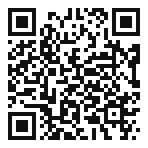
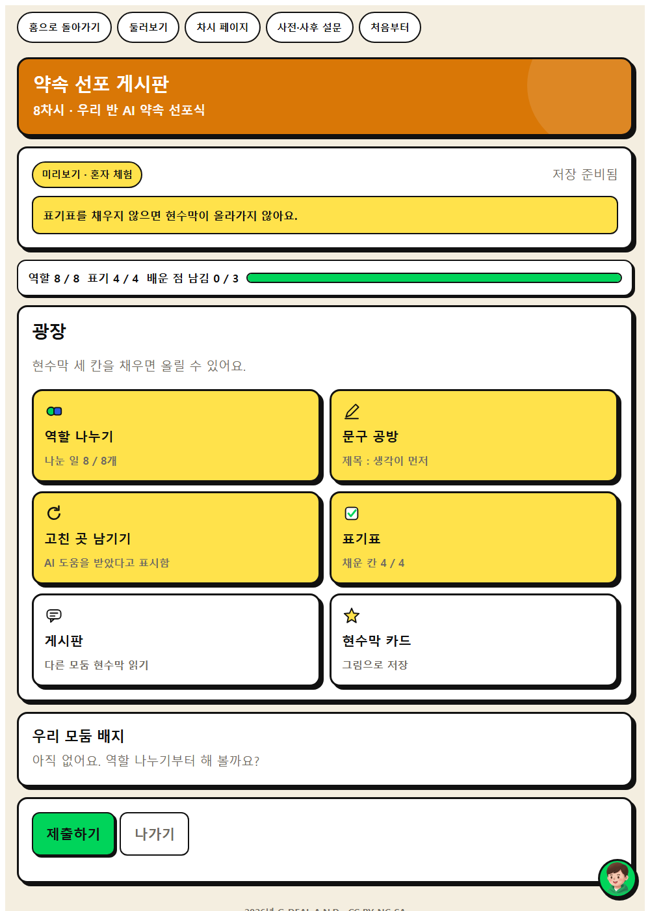
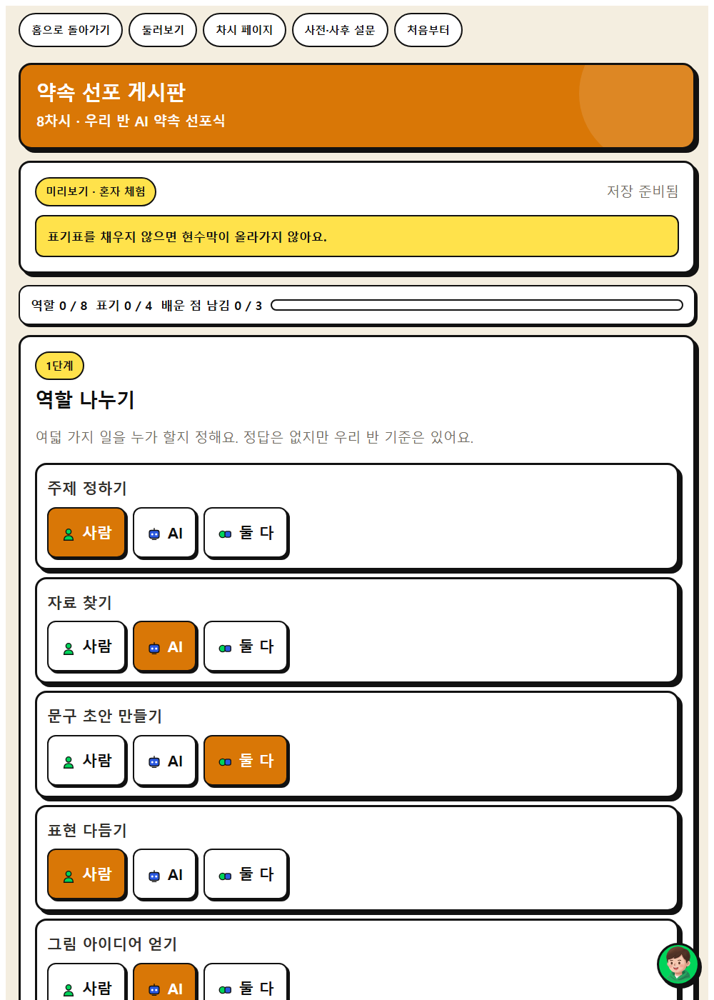
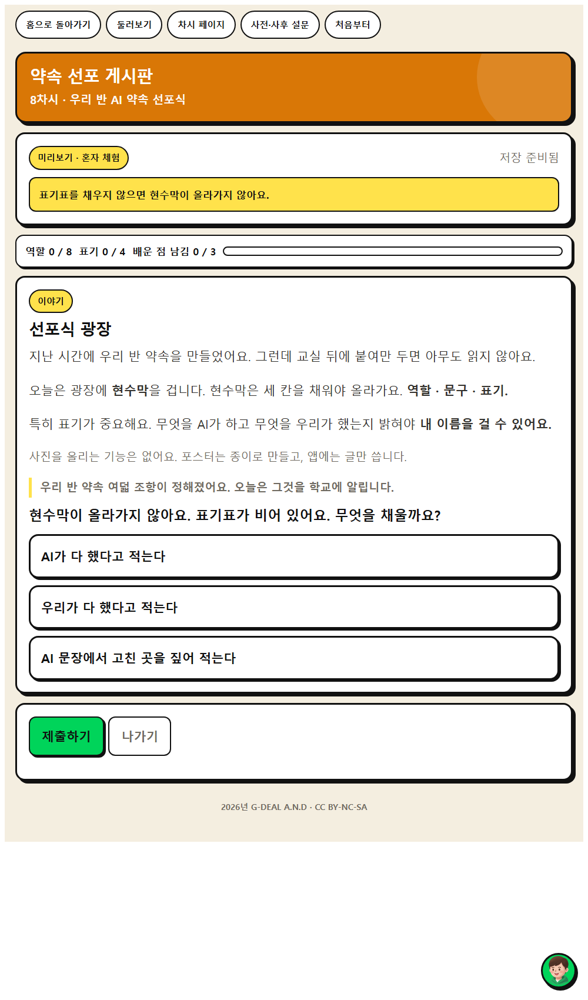
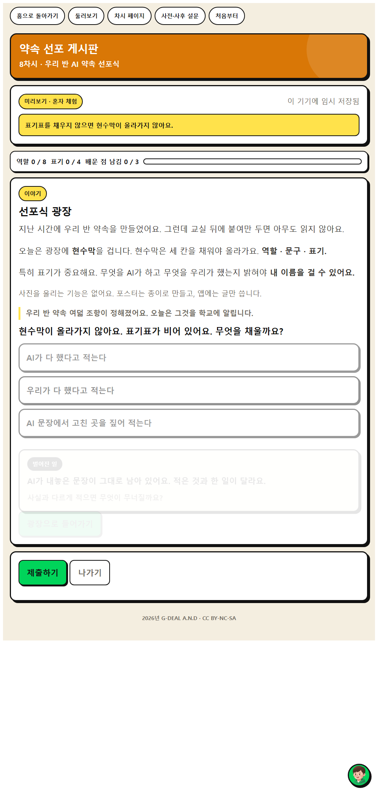

우리 반 AI 약속을 다른 사람에게 알릴 자료를 만들어 봅시다.



상황을 읽고 보기 셋 가운데 하나를 고릅니다. 고르면 바로 답이 나오지 않고 1.6초 기다립니다. 그 틈이 생각하는 자리입니다. 결과가 열린 뒤에도 0.9초가 지나야 넘어가는 단추가 생깁니다.
옳고 그름을 매기지 않습니다. 어느 보기를 골라도 막히지 않고, 고른 대로 다른 일이 벌어질 뿐입니다. 판단이 갈린 자리를 수업에서 다시 꺼내 주세요.
화면을 옮길 때도 0.7초 기다립니다. 고장이 아닙니다. 급한 학생은 기다리는 화면을 한 번 더 누르면 바로 넘어갑니다.


우리 반 AI 약속을 다른 사람에게 알릴 자료를 만들어 봅시다.
모둠에서 사람이 할 일과 AI에게 맡길 일을 먼저 표로 나눠 봅시다.
예시문구와 배치는 우리가, 배경 그림은 AI에게 맡기기로 했습니다.
정한 역할대로 자료를 만들어 봅시다. 문구는 누구의 말인가요?
예시우리 반이 토의해서 정한 말입니다.
AI가 만든 그림을 그대로 쓸까요, 고칠까요?
예시글씨가 가려져서 배치를 우리가 다시 잡았습니다.
자료 아래에 무엇을 AI로 만들었는지 적어 봅시다. 왜 적어야 할까요?
예시누가 무엇을 했는지 밝히는 것이 정직한 방법이기 때문입니다.
인간중심 사고를 기르는 AI적정활용 수업 WISE · 2026년 G-DEAL A.N.D · CC BY-NC-SA